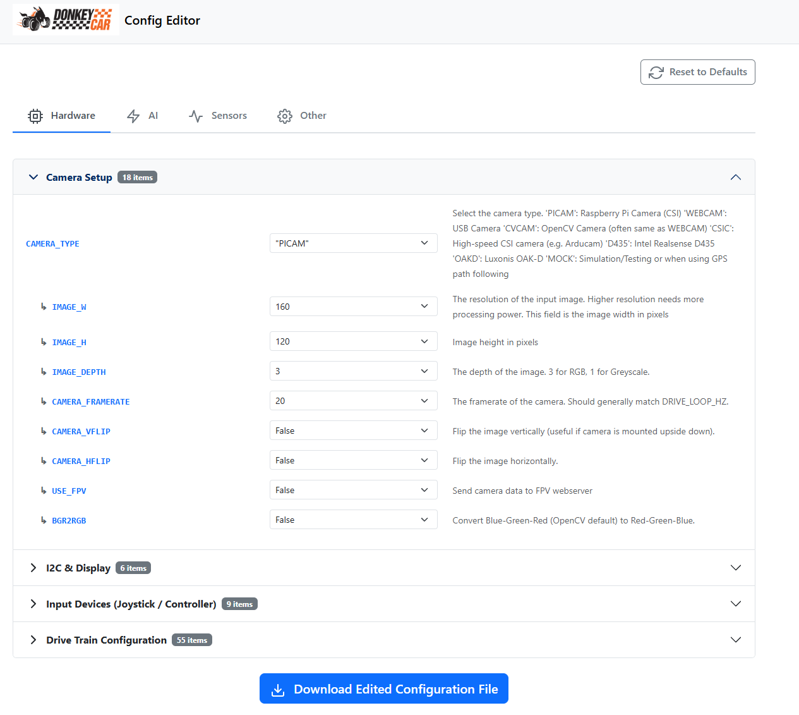

Create your car application
If you are not already, please ssh into your vehicle.
Create Donkeycar from Template
Create a set of files to control your Donkey with the createcar command:
donkey createcar --path ~/mycar
That creates a car using the default deep learning template. You can also create a car that uses the gps path follow template;
donkey createcar --template=path_follow --path ~/mycar
You can also create a car that uses the computer vision template;
donkey createcar --template=cv_control --path ~/mycar
mycaris not a special name; you can name your car folder anything you want. See the createcar documentation for more details.
Configure Options
There are two ways to configure Donkeycar, both of which create a custom myconfig.py file that you will have in your mycar directory. The first is the easiest: use our handy Web configurator and just go through the tabs selecting things as needed to match your configuration. For most people, the first tab (Hardware) is all you need to confirm what kind of drive train and joypad/controller you're using. Then save the created myconfig.py file to your computer and transfer it to your Pi using your favorite FTP transfer app such as Filezilla.

The second way is to manually edit the file on your Pi: look at myconfig.py in your newly created directory, ~/mycar
cd ~/mycar
nano myconfig.py
Each line has a comment mark. The commented text shows the default value. When you want to make an edit to over-write the default, uncomment the line by removing the # and any spaces before the first character of the option.
example:
# STEERING_LEFT_PWM = 460
becomes:
STEERING_LEFT_PWM = 500
when edited. You will adjust these later in the calibrate section.
Configure I2C PCA9685
If you are using a PCA9685 servo driver board, make sure you can see it on I2C.
Jetson Nano:
sudo usermod -aG i2c $USER
sudo reboot
After a reboot, then try:
sudo i2cdetect -r -y 1
Raspberry Pi:
sudo apt-get install -y i2c-tools
sudo i2cdetect -y 1
This should show you a grid of addresses like:
0 1 2 3 4 5 6 7 8 9 a b c d e f
00: -- -- -- -- -- -- -- -- -- -- -- -- --
10: -- -- -- -- -- -- -- -- -- -- -- -- -- -- -- --
20: -- -- -- -- -- -- -- -- -- -- -- -- -- -- -- --
30: -- -- -- -- -- -- -- -- -- -- -- -- -- -- -- --
40: 40 -- -- -- -- -- -- -- -- -- -- -- -- -- -- --
50: -- -- -- -- -- -- -- -- -- -- -- -- -- -- -- --
60: -- -- -- -- -- -- -- -- -- -- -- -- -- -- -- --
70: 70 -- -- -- -- -- -- --
In this case, the 40 shows up as the address of our PCA9685 board. If this does not show up, then check your wiring to the board. On a pi, ensure I2C is enabled in menu of sudo raspi-config (notice, it suggest reboot).
If you have assigned a non-standard address to your board, then adjust the address in the myconfig.py under variable PCA9685_I2C_ADDR. If your board is on another bus, then you can specify that with the PCA9685_I2C_BUSNUM.
Jetson Nano: set PCA9685_I2C_BUSNUM = 1 in your myconfig.py . For the pi, this will be auto detected by the Adafruit library. But not on the Jetson Nano.
Sombrero Setup
Set HAVE_SOMBRERO = True in your myconfig.py if you have a sombrero board.
Robo HAT MM1 Setup
Set HAVE_ROBOHAT = True in your myconfig.py if you have a Robo HAT MM1 board. Also set the following variables according to your setup. Most people will be using the below values, however, if you are using a Jetson Nano, please set MM1_SERIAL_PORT = '/dev/ttyTHS1'
#ROBOHAT MM1
HAVE_ROBOHAT = True # set to true when using the Robo HAT MM1 from Robotics Masters. This will change to RC Control.
MM1_STEERING_MID = 1500 # Adjust this value if your car cannot run in a straight line
MM1_MAX_FORWARD = 2000 # Max throttle to go fowrward. The bigger the faster
MM1_STOPPED_PWM = 1500
MM1_MAX_REVERSE = 1000 # Max throttle to go reverse. The smaller the faster
MM1_SHOW_STEERING_VALUE = False
# Serial port
# -- Default Pi: '/dev/ttyS0'
# -- Jetson Nano: '/dev/ttyTHS1'
# -- Google coral: '/dev/ttymxc0'
# -- Windows: 'COM3', Arduino: '/dev/ttyACM0'
# -- MacOS/Linux:please use 'ls /dev/tty.*' to find the correct serial port for mm1
# eg.'/dev/tty.usbmodemXXXXXX' and replace the port accordingly
MM1_SERIAL_PORT = '/dev/ttyS0' # Serial Port for reading and sending MM1 data (raspberry pi default)
# adjust controller type as Robohat MM1
CONTROLLER_TYPE='MM1'
# adjust drive train for web interface
DRIVE_TRAIN_TYPE = 'MM1'
The Robo HAT MM1 uses a RC Controller and CircuitPython script to drive the car during training. You must put the CircuitPython script onto the Robo HAT MM1 with your computer before you can continue.
- Download the CircuitPython Donkey Car Driver for Robo HAT MM1 to your computer from here
- Connect the MicroUSB connector on the Robo HAT MM1 to your computer's USB port.
- A CIRCUITPY device should appear on the computer as a USB Storage Device
- Copy the file downloaded in Step 1 to the CIRCUITPY USB Storage Device. The file should be named code.py. It should be at the top level of the drive, not in any folder.
- Download the Adafruit logging library python file, adafruit_logging.py, here
- Copy the adafruit_logging.py file into the CIRCUITPY "lib" folder
- Unplug USB Cable from the Robo HAT MM1 and place on top of the Raspberry Pi, as you would any HAT.
You may need to enable the hardware serial port on your Raspberry Pi. On your Raspberry Pi...
- Run the command
sudo raspi-config - Navigate to the 5 - Interfaceing options section.
- Navigate to the P6 - Serial section.
- When asked: Would you like a login shell to be accessible over serial? NO
- When asked: Would you like the serial port hardware to be enabled? YES
- Close raspi-config
- Restart
If you would like additional hardware or software support with Robo HAT MM1, there are a few guides published on Hackster.io. They are listed below.
Joystick setup
If you plan to use a joystick, take a side track over to here.
Camera Setup
If you are using the default deep learning template or the computer vision template then you will need a camera. By default myconfig.py assumes a RaspberryPi camera. You can change this by editing the CAMERA_TYPE value in the myconfig.py file in your ~/mycar folder.
If you are using the gps path follow template then you do not need, and may not want, a camera. In this case you can change the camera type to mock; CAMERA_TYPE = "MOCK".
See Cameras for details on the various cameras and configuration.
Upgrade Donkey Car Software
Make all config changes to myconfig.py and they will be preserved through an update. When changes occur that you would like to get, you can pull the latest code, then issue a:
cd projects/donkeycar
git pull
donkey createcar --path ~/mycar --overwrite
If you created a car with the gps path follow template then remember to include the --template argument;
donkey createcar --template=path_follow --path ~/mycar --overwrite
Your ~/mycar/manage.py, ~/mycar/config.py and other files will change with this operation, but myconfig.py will not be touched. Your data and models dirs will not be touched.